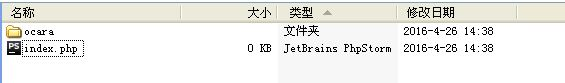

1.1-新建应用
1、确定网站根目录
假设网站根目录放在D:/wwww下面。
2、指定框架目录
框架目录可以放在根目录外或内部。本实例中，假设放在根目录中，也就是D:/www/ocara。
3、新建主文件
在D:/www下面新建index.php，代码如下：
/*
* 框架所在目录,需配置正确
*/
define('OC_PATH', './ocara');
/*
* 运行应用
*/
require(OC_PATH . '/system/application.php');
Application::create();
说明：
1、框架所在目录配置成“./ocara”，表示是在当前根目录下面。
2、Application::create()就是新建应用的方法函数。
应用根目录如下图：

4、运行生成应用
运行主文件，框架会自动在当前目录下面新建基本的应用目录和文件。
假设，当前本地域名是localhost。所以请运行：http://localhost/index.php。
此时，页面中显示“Application create Success!”表示生成成功！
生成目录后，目录结构如下图：